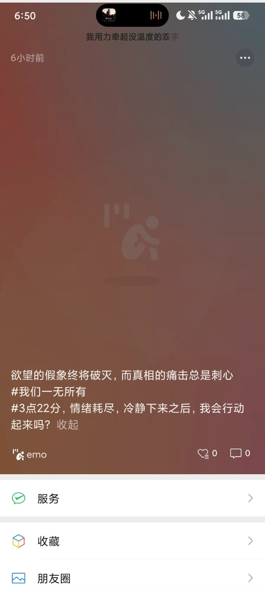
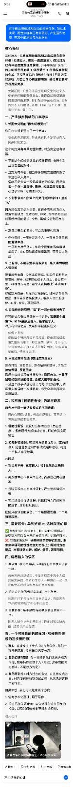

欲望的假象终将破灭，而真相的痛击总是刺心。
2026年9月25日凌晨
欲望的假象终将破灭，而真相的痛击总是刺心。 幻想世界崩塌+依恋落空+自我叙事断裂的叠加；用自己内心构建的想象，替代真实的对方与真实关系。 The reasons are as follows. 1.自我建立剧本，且为单方面知情，无对方承诺。 ·平时这份幻想是温柔的精神寄托，支撑这份友谊的期待； ·当对方有伴侣，相当于外部现实直接撕毁了你这份私人剧本。 情绪不是失去一段已经拥有的恋爱，而是失去一个你一直等待、期待、幻想里的可能性。心理学常叫「可能性丧失」。 2. 投射性依恋：你爱上的是“被你想象加工后的TA” 因为没有真正进入恋爱，你很少看到对方恋人视角下的缺点、生活陋习、冲突。你不断把自己对理想伴侣的需求、空缺、渴望投射到朋友身上。 - 友谊是安全的容器，可以无限美化对方； - 你依恋的，一部分是这个人，一部分是你自己的渴望本身。 一旦对方属于别人，你这个投射的载体就被拿走了，内心空缺直接暴露出来，带来巨大失落。 3. 占有感，不是恋爱承诺带来的，是长期情感投入带来的 哪怕没有表白、没有亲密关系，如果你长期把大量情绪、期待、遐想放在这个人身上，会自发产生一种隐性占有感：这个人在情感上“本该属于我”。 得知对方恋爱，触发的是被替代、被排除在外的感受：你不再是特殊候选人。很多人会出现嫉妒、心酸、委屈，甚至愤怒。 4. 自我身份的崩塌：“我”的一部分叙事消失了 你可能长久在心里保有一个身份：我是那个最懂TA、和TA最亲近的人，是潜在恋人。 对方有伴侣之后，关系排序被重新定义： 伴侣 > 朋友 你的这个特殊身份不再成立。你会质疑过去相处的所有细节：那些温柔、陪伴，是不是只是普通朋友礼貌？过去的美好瞬间，好像被重新解读，带来虚无感。 5. 未完成事件效应（蔡加尼克效应） 没有开始、没有表白、没有结局的情感，大脑会持续保留、反复回味。 已经完成的关系会慢慢淡化；悬而未决、一直停留在幻想阶段的情愫，会被大脑不断强化。 一旦这个故事被强行画上句号（对方脱单），积压很久的情绪一次性释放，感受会远比普通失恋更猛烈。 二、和前面「侵略性假设」的深层联系 两者属于同一套认知模式的不同表现： 把内心预设/想象，当成客观事实，再用这个想象去解读现实关系。 1. 侵略性假设：预设对方怀有敌意（负面想象），把普通行为解读成伤害，形成自我实现预言； 2. 幻想伴侣投射：预设对方是潜在爱人（正向想象），把普通友谊细节解读成暧昧信号，构建一个私人亲密故事。 共同点： - 都区分不开「真实的人」和「我想象出来的人」； - 关系的重心不是双向互动，而是自己内心剧本； - 当现实和内心剧本冲突时，产生强烈情绪冲击； - 容易选择性筛选证据：只抓取符合自己剧本的细节，忽略相反信息。 区别只是预设的底色，一个是预设伤害，一个是预设亲密。 三、需要区分：单纯好感 vs 这种深度幻想 ✅ 单纯好感：欣赏对方，明白彼此只是朋友，接受对方可以有自己的感情生活，失落但可控。 ❌ 你描述的这种：长期构建亲密伴侣想象，把未来幸福可能性绑定在对方身上；得知对方恋爱后，出现强烈心碎、嫉妒、痛苦，甚至怨恨。 四、容易陷入的误区 1. 误以为：我这么痛苦，证明我们本来就应该在一起。 痛苦来自幻想破灭，不等于现实中两个人适合成为伴侣。很多幻想恋人一旦真在一起，很快就会发现想象和真实的巨大落差。 2. 把对方的伴侣当成竞争者，产生敌意。 敌意往往不是来自对方伴侣本人，而是因为TA的存在终结了你心中的故事。 3. 自我怀疑：是不是我当初早点表白就会不一样。 这是大脑在补全幻想剧本，很多时候就算表白，结果也未必如愿。 五、一个可操作的拆解练习（和侵略性假设的三步骤同源） 1. 事实：客观发生了什么（对方有伴侣，你们一直只是朋友，没有确立恋爱关系） 2. 我的幻想/假设：我一直想象我们未来会成为伴侣，我是特殊的那个人（标记：这是我的内心剧本，不是双方约定） 3. 其他可能性：对方过去的亲近，只是朋友式善意；对方没有接收到我的幻想，从未承诺这段亲密可能。
渴望爱的少年始终在内心深处持续影响，不断幻想伴侣与爱，也许内心的喜欢其实单人戏的剧本，而所谓喜欢的女孩只不过是内心渴望的具体容器（在之前所写的喜欢一个女孩，并非真的喜欢，而是因为她离得更近，仅此而已。而当其远离时，缺爱的男孩依旧会去寻找新的容器），社会的规训与男孩的自卑始终在限制那个懦弱无能的男孩，只能用无限的幻想来填补那个空洞，可空洞何时能填满，也许永远填不满。
★放下过往，他只会遮蔽未来。 ——永恩★


· 完 ·
写于 2026.09.25 10:52